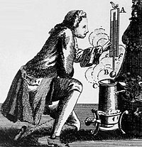

Em 1708 Daniel Gabriel Fahrenheit visitou Ole Rømer em Copenhaga. Com ele, aprendeu muito sobre a construção de termómetros de mercúrio, aperfeiçoando o processo de purificação do elemento posteriormente. Rømer era astrónomo e, portanto, estava habituado a utilizar o sistema de numeração sexagesimal. Esta provavelmente é a razão de ter atribuído nas suas pesquisas o valor 0 ° ao ponto de fusão da água e o valor 60 ° ao ponto de ebulição desta.

Daniel Gabriel Fahrenheit - Pai dos graus Fahrenheit.
Percebera, entretanto, que a temperatura mais baixa medida com seu termómetro em Copenhaga era inferior ao valor considerado 0 ° (ponto de fusão da água). Ao comparar a diferença entre o ponto de fusão da água e este "novo" valor encontrado, com o ponto de fusão da água e o de ebulição da mesma, constatou que a primeira diferença correspondia a 1/8 do tamanho da distância entre a fusão e a ebulição da água. Como a escala era dividida em 60 unidades, este 1/8 correspondia a 7,5, ou seja, a menor temperatura encontrada em Copenhaga era -7,5 ° numa escala que o ponto de fusão da água era 0 ° e o ponto de ebulição era 60 °. Para evitar valores negativos nas suas medições meteorológicas, resolveu alterar a nomenclatura para 0 ° na temperatura mais baixa em Copenhaga, alterando consequentemente a temperatura de congelamento da água para 7,5 °.
Pontos de Ebulição e Fusão de Alguns Elementos Químicos: